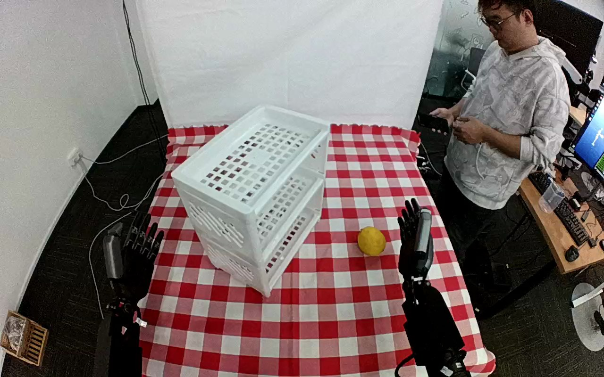

ActionNet · 01JHF84WJCMA7S2S3S
01jhf84wjcma7s2s3s

Visual review action_review.json
{
"dataset": "ActionNet",
"episode_id": "01JHF84WJCMA7S2S3S",
"prompt_protocol": "humanoid_action_v1",
"prompt_provenance": "visually_authored_from_video_and_initial_frame",
"review_scope": "One dedicated agent reviewed the complete unchanged 461-frame top/rgb.mp4 and the generation first frame. Full single-task sequence retained.",
"source_video": "../../original/top/rgb.mp4",
"conditioning_first_frame": "../first_frame.png",
"generation_video": "../video.mp4",
"action_prompt": "../actiongeneration_prompt.txt",
"source_frame_start": 0,
"source_frame_end_exclusive": 461,
"fps_rational": "30/1",
"resolution": [
1280,
800
],
"source_annotation": {
"verbatim_task_prompt": "Take the lemon and put it on the second shelf",
"task_prompt_path": "../../original/task_prompt.txt"
},
"anatomical_side_evidence": {
"active_arm": "hand entering from the lower-right edge of the initial image",
"initial_frame_evidence": "Two dark forearms enter from the near lower image edges; the active hand is attached to the lower-right forearm, stands upright beside the lemon, and the lower-left hand stays upright at the left edge. Torso and shoulders are outside the image. The grasp places the thumb on the image-left side of the lemon with grouped fingers on the image-right side, but this does not independently establish the camera pose relative to the robot body or whether the view is mirrored.",
"confidence": "Visible-arm identity is unambiguous; anatomical left/right is not independently established."
},
"arm_roles": {
"lower_right_visible_arm": "Sole manipulating hand: lowers beside the lemon, closes thumb and fingers around it, bears it during lift and transport, pushes it into the open side of the shelf unit, opens its fingers to release it, withdraws and returns upright.",
"lower_left_visible_arm": "Remains upright at the left image edge throughout; no observed contact with the lemon, shelf unit or any task object."
},
"coordination": "Single-hand object placement. No hand-to-hand transfer, bimanual stabilization, or regrasp is observed. The standing person at the right edge looks at a phone throughout and does not interact with the robot, lemon or shelf.",
"chronology": [
{
"frames": [
0,
40
],
"observation": "Lemon lies on the tablecloth to the right of the white three-level shelf unit; the lower-right hand is upright beside it and the lower-left hand is upright at the left edge. The standing person holds a phone."
},
{
"frames": [
42,
100
],
"observation": "The lower-right arm tilts the hand toward the lemon. At frame 50 the open hand is beside the right side of the lemon with fingers pointing away from the camera; by frame 90 the thumb has reached the image-left side of the lemon while the grouped fingers stay on the image-right side."
},
{
"frames": [
102,
150
],
"observation": "Thumb and fingers close on opposing sides of the lemon; frame 110 shows the closing motion and frame 130 shows the lemon enclosed between thumb and fingers. At frame 150 the lemon is held but still at table position."
},
{
"frames": [
152,
214
],
"observation": "The hand lifts the lemon off the tablecloth (frame 170 clearly raised) and begins carrying it toward the shelf unit; the hand alone bears the lemon (frame 190, 216)."
},
{
"frames": [
216,
300
],
"observation": "The held lemon is carried leftward and upward to the right-facing open side of the shelf. Frame 240 shows it beside the upper levels, frame 270 near the second level with fingertips toward the shelf, and frame 300 with the hand tilted and the lemon at the second-from-top level."
},
{
"frames": [
302,
370
],
"observation": "The hand pushes the lemon into the second shelf level under the top tray (frames 330-364); the lemon becomes partly hidden behind the hand and the top tray rim, so exact first contact with the shelf floor is occluded."
},
{
"frames": [
372,
388
],
"observation": "The fingers open and spread (frames 378-388) while the lemon rests in the shelf compartment."
},
{
"frames": [
390,
412
],
"observation": "The hand moves back out of the compartment (frames 392-400), still partly in front of the lemon; the lemon stays in place at 396 and 400."
},
{
"frames": [
414,
460
],
"observation": "The hand withdraws toward the lower right (frame 420), rises to an upright pose (frame 440) and remains upright to the final frame 460. The lemon rests inside the second shelf level from the top for the rest of the clip."
}
],
"observed_outcome": {
"status": "successful_visible_placement",
"description": "Lemon is released inside the second shelf level from the top of the white shelf unit and stays there while the hand withdraws and returns upright at the lower right.",
"selected_action_outcome": "successful_visible_placement",
"source_overall_success_label": "not used to infer outcome"
},
"source_annotation_discrepancies": [
"The source says 'second shelf' without a counting direction; the lemon visibly ends in the second level from the top (the compartment directly below the top tray), so the usable prompt states 'second shelf level from the top'.",
"The source does not mention that the lemon is carried to the shelf's open side facing the robot hand and pushed in rather than set down from above; the prompt describes the observed insertion."
],
"uncertainties": [
"Anatomical left/right is not independently established; torso and shoulder attachment are outside the image and camera pose or mirroring is unknown. The prompt uses the hand entering from the lower-right edge.",
"The exact release frame and first contact with the shelf floor are partially occluded by the hand and the top tray rim; the open-finger interval 372-388 brackets release.",
"Counting shelf levels from the top is inferred from the stack geometry (top tray, then the level where the lemon rests, then a lower level).",
"Lemon material (real fruit versus prop) cannot be established visually."
],
"inspection_coverage": {
"total_decoded_frames": 461,
"overview_frame_indices": {
"start": 0,
"stop_inclusive": 460,
"step": 2,
"count": 231
},
"overview_method": "Decoded RGB every second frame into twenty temporary 4-by-3 contact sheets at 480 px per tile outside dataset folders; reviewed all sheets, then inspected cropped native-resolution tiles around the hand and shelf.",
"native_resolution_frames": [
0,
50,
90,
110,
130,
150,
170,
190,
216,
240,
270,
300,
330,
340,
350,
356,
364,
370,
372,
378,
384,
385,
388,
392,
395,
396,
400,
410,
420,
440
],
"native_resolution": [
1280,
800
],
"initial_png_inspected_after_full_sequence": true,
"temporary_evidence_location": "/tmp/an_review_01JHF84WJCMA7S2S3S (not under generation input; removed after review)",
"retained_evidence_frame_directories": false
},
"preservation": {
"whole_original_single_task_clip_retained": true,
"crop": false,
"shorten": false,
"resize": false,
"reencode": false,
"source_and_generation_sha256_equal": true
},
"prompt_word_count": 93
}